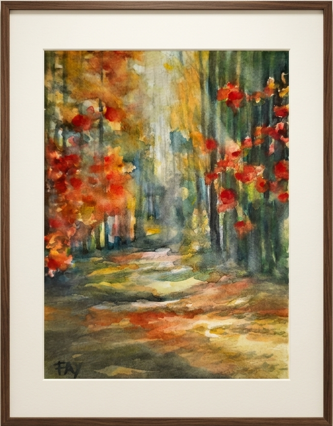
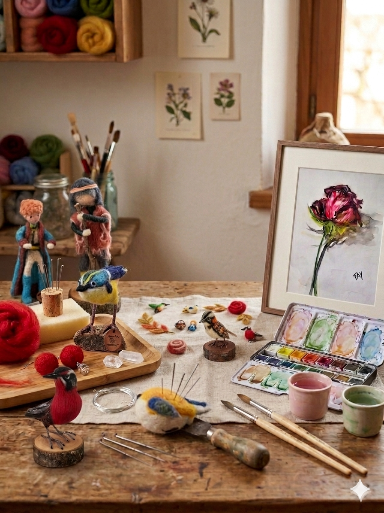

Arte hecho a mano
Arte Fay
Piezas con alma, clases cercanas y detalles creados para quedarse en casa.
- Hecho a mano
- Colecciones pequeñas
- Atención directa
Arte hecho a mano
Piezas con alma, clases cercanas y detalles creados para quedarse en casa.
Colección destacada
Ilustraciones inspiradas color suave y detalles hechos a mano.
Obras y talleres
Capas de color, texturas delicadas y obras para mirar con calma.
Un recorrido visual por obras, accesorios textiles y clases para crear con calma.
 Naturaleza
Naturaleza
Ilustraciones y obras inspiradas en aves locales, color, movimiento y detalle.
Ver colección
OriginalesAccesorios textiles livianos, coloridos y creados en pequeñas colecciones.
Ver accesorios
TalleresCuéntanos tus ideas y crearemos algo especial para ti.